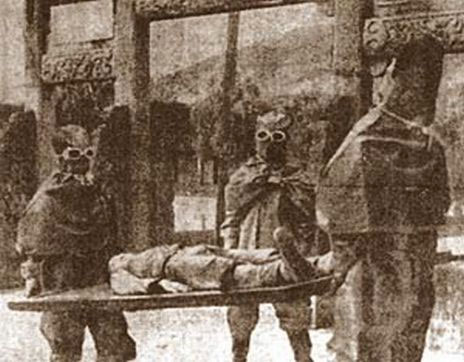

Geneva, Switzerland
1930-1931
In 1925, the 1925 Geneva Protocol was introduced to ban the use of chemical and bacteriological (biological) weapons in war. To the Japanese military, this just proved the effectiveness of bio-weapons, leading them to set-up units dedicated towards researching such destructive weapons.
On 18 September 1931, the Imperial Japanese Army invaded Manchuria. Since Manchuria was away from home and the test subjects (Chinese national) would be "no-cost", it became the ideal location for research units.
1932
Ater a 2-year study trip abroad, Surgeon General Ishii saw that western powers were developing their own bio-weapon programs. Thus, he organized a secret research group, called Unit Togo, as the commander of the Army Epidemic Prevention Research Lab (AEPRL).
Unit Togo was set into motion in Zhongma Fortress, a prison and experimentation camp in a remote village, Beiyinhe, 100km south of Harbin, China.
A photograph of Zhongma Fortress in Beiyinhe
Who were the victims?
At Zhongma, several groups of victims, some completely innocent, were tortured, experimented on and raped.
Victims include:
- Common criminals and bandits
- Anti-Japanese partisans
- Political Prisoners
- People brought in on exaggerated charges by the Kempeitati (Japanese military police)
Prisoners were drained of blood and deprived of nutrients and water over several days as well.